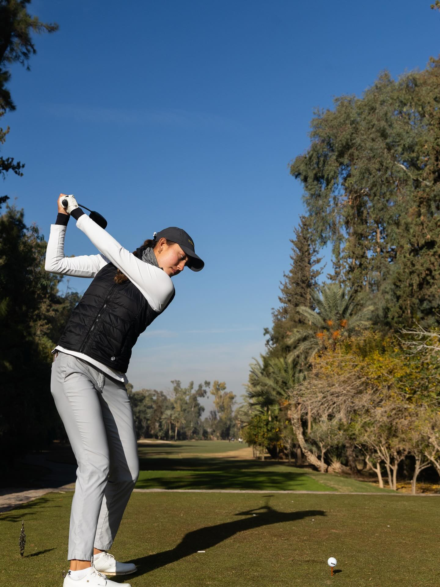
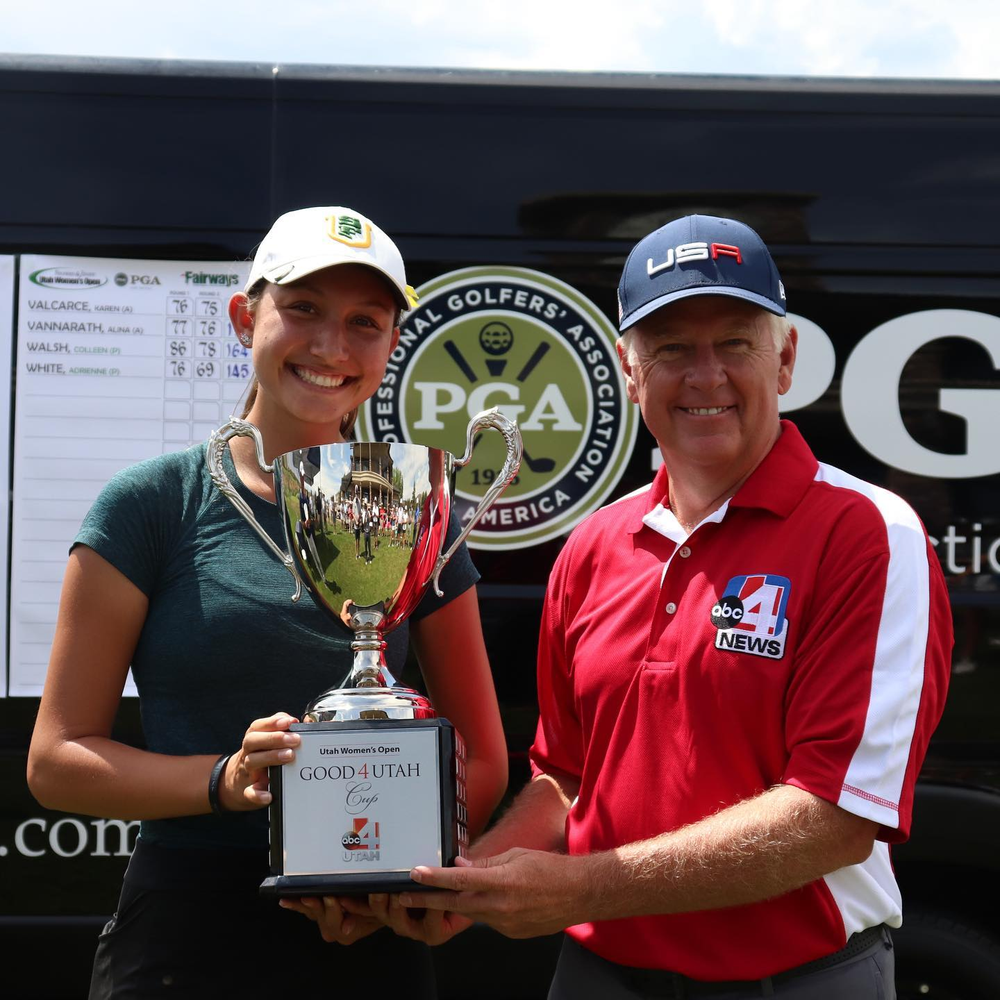
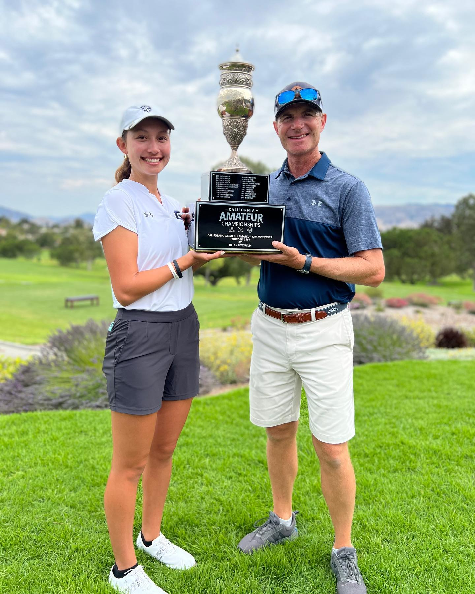
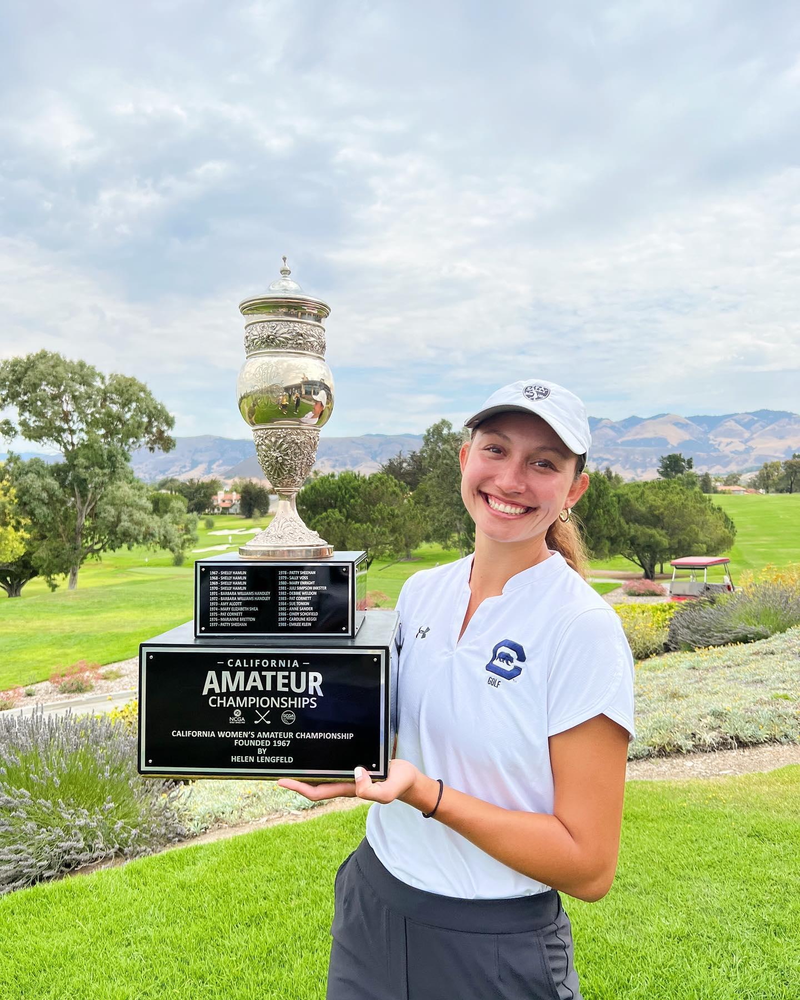
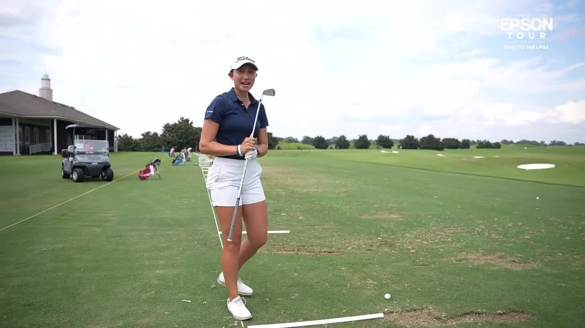
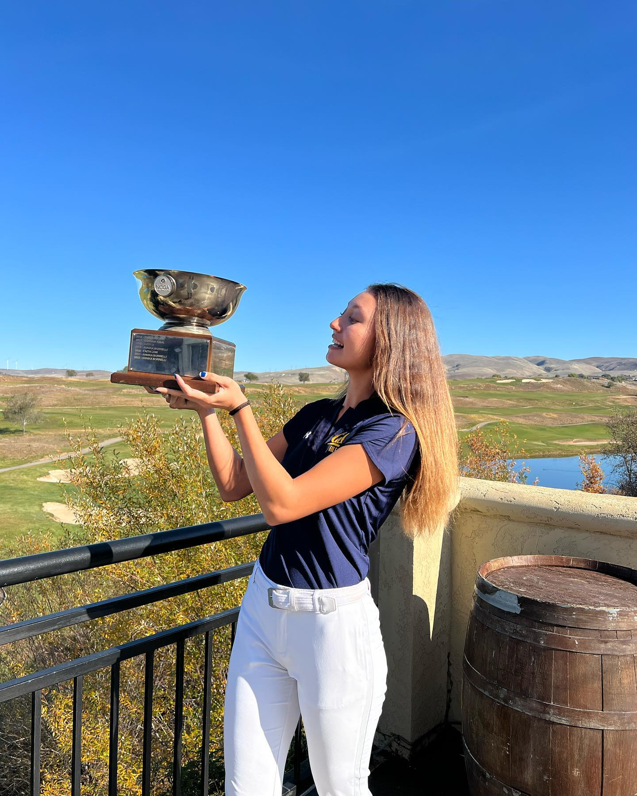

Pro Golfer
Two-time California Women’s Amateur champion, Pac‑12 standout at Cal, and now competing on the Epson Tour and LET. Discipline, poise, and a clear path to the next level.
About Me
Who is Annika
Annika Borrelli is an American professional golfer known for her competitive spirit, clean ball-striking, and steady progression from elite amateur golf into the professional ranks.
She started playing at age three, won the Utah Women's Open in 2019, captured the California Women's Amateur in both 2021 and 2022, and played college golf at the University of San Francisco and California.
More than a golfer, she is a disciplined competitor shaped by repetition, poise, and a relentless standard for improvement.
Learn More

My Career
From amateur titles to international starts, Annika's career reflects patience, competitive maturity, and a clear climb through women's professional golf.
Career Highlights
Discover More
2019
Utah Women's Open Champion


2021 & 2022
California Women's Amateur Winner
Back-to-back state amateur titles cemented one of the strongest stretches of her amateur resume.

2023
Epson Tour Competition
Annika entered Epson Tour events as part of her transition into professional golf.
College Golf
USF & Cal
Tours
LET & LET Access
Partnerships & Events
My Partnerships
Annika's public competitive footprint currently centers on verified golf platforms and tour profiles. Until approved sponsors are supplied, this section highlights the tours and official destinations tied to her professional journey.
Epson Tour
Official athlete page documenting her early professional starts in the U.S. development pipeline.
Open profileLET Access Series
Verified tour destination connected to Annika's international playing schedule.
Open profileMy Technique
Trademark Technique
Annika's game is built around balance, disciplined practice, and competitive composure. Her style combines athletic power with control through impact, giving her the freedom to attack while staying composed under tournament pressure.
The emphasis is not flash for its own sake. It is sequence, precision, and a repeatable move that holds up over long competitive weeks.
Training insights and official media can replace these placeholders as soon as approved assets arrive.
